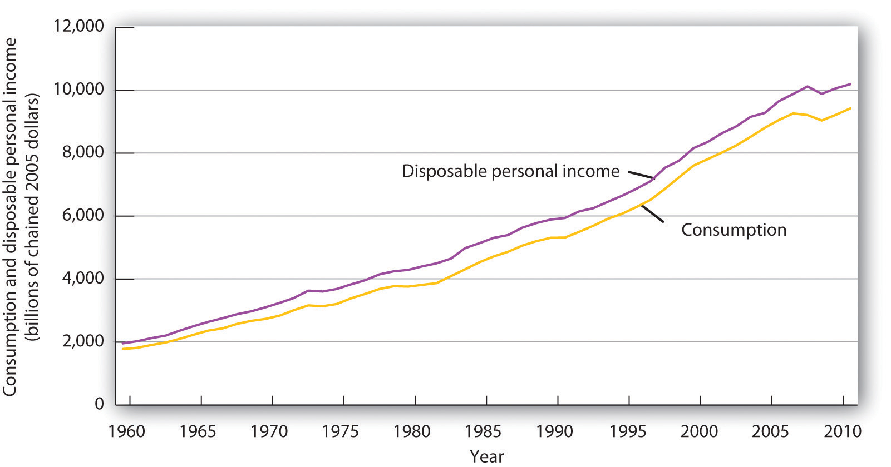
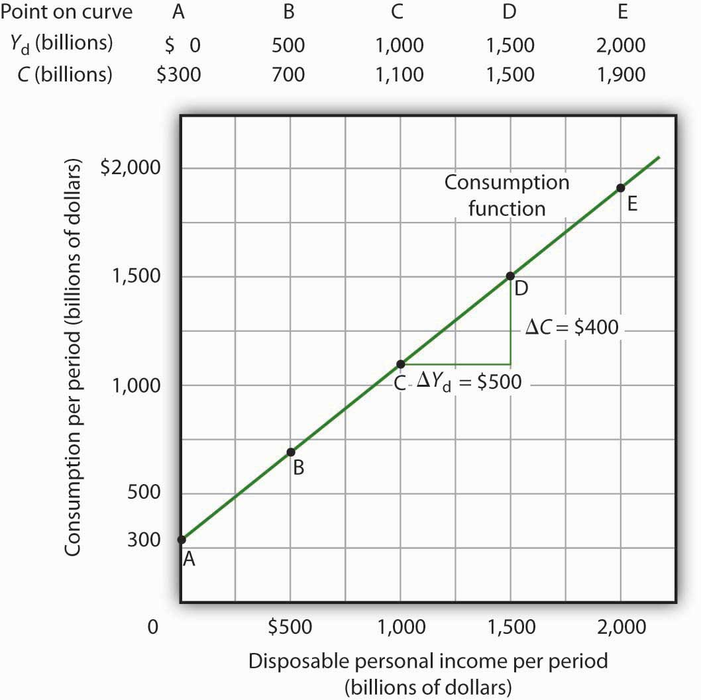
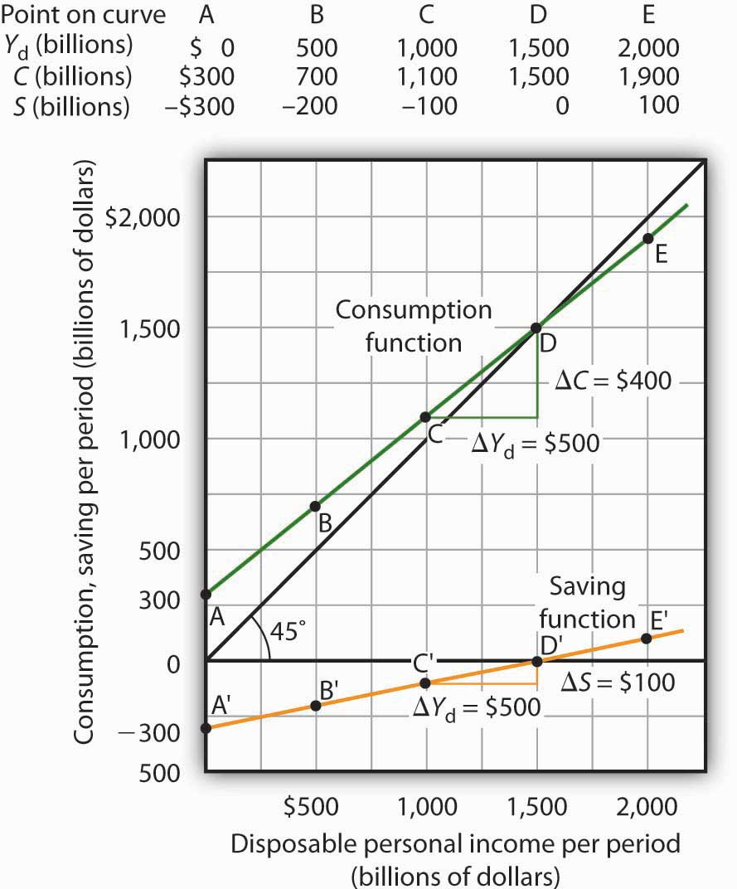
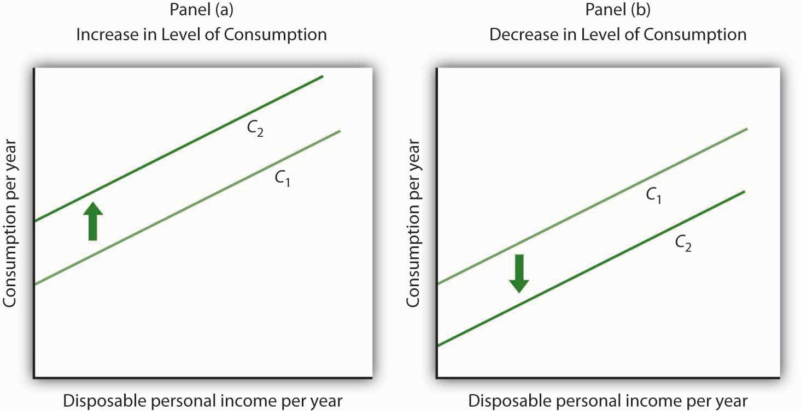

J. R. McCulloch, an economist of the early nineteenth century, wrote, “Consumption … is, in fact, the object of industry.”J. R. Mc Culloch, A Discourse on the Rise, Progress, Peculiar Objects, and Importance, of Political Economy: Containing the Outline of a Course of Lectures on the Principles and Doctrines of That Science (Edinburgh: Archibald Constable, 1824), 103. Goods and services are produced so that people can use them. The factors that determine consumption thus determine how successful an economy is in fulfilling its ultimate purpose: providing goods and services for people. So, consumption is not just important because it is such a large component of economic activity. It is important because, as McCulloch said, consumption is at the heart of the economy’s fundamental purpose.
It seems reasonable to expect that consumption spending by households will be closely related to their disposable personal income, which equals the income households receive less the taxes they pay. Note that disposable personal income and GDP are not the same thing. GDP is a measure of total income; disposable personal income is the income households have available to spend during a specified period.
Real values of disposable personal income and consumption per year from 1960 through 2011 are plotted in Figure 28.1 "The Relationship between Consumption and Disposable Personal Income, 1960–2011". The data suggest that consumption generally changes in the same direction as does disposable personal income.
The relationship between consumption and disposable personal income is called the consumption functionThe relationship between consumption and disposable personal income.. It can be represented algebraically as an equation, as a schedule in a table, or as a curve on a graph.
Figure 28.1 The Relationship between Consumption and Disposable Personal Income, 1960–2011
Plots of consumption and disposable personal income over time suggest that consumption increases as disposable personal income increases.
Source: U. S. Department of Commerce, Bureau of Economic Analysis, NIPA Tables 1.1.6 and 2.1 (revised February 29, 2012).
Figure 28.2 "Plotting a Consumption Function" illustrates the consumption function. The relationship between consumption and disposable personal income that we encountered in Figure 28.1 "The Relationship between Consumption and Disposable Personal Income, 1960–2011" is evident in the table and in the curve: consumption in any period increases as disposable personal income increases in that period. The slope of the consumption function tells us by how much. Consider points C and D. When disposable personal income (Yd) rises by $500 billion, consumption rises by $400 billion. More generally, the slope equals the change in consumption divided by the change in disposable personal income. The ratio of the change in consumption (ΔC) to the change in disposable personal income (ΔYd) is the marginal propensity to consumeThe ratio of the change in consumption (ΔC) to the change in disposable personal income (ΔYd). (MPC). The Greek letter delta (Δ) is used to denote “change in.”
Equation 28.1
In this case, the marginal propensity to consume equals $400/$500 = 0.8. It can be interpreted as the fraction of an extra $1 of disposable personal income that people spend on consumption. Thus, if a person with an MPC of 0.8 received an extra $1,000 of disposable personal income, that person’s consumption would rise by $0.80 for each extra $1 of disposable personal income, or $800.
We can also express the consumption function as an equation
Equation 28.2
Figure 28.2 Plotting a Consumption Function
The consumption function relates consumption C to disposable personal income Yd. The equation for the consumption function shown here in tabular and graphical form is C = $300 billion + 0.8Yd.
It is important to note carefully the definition of the marginal propensity to consume. It is the change in consumption divided by the change in disposable personal income. It is not the level of consumption divided by the level of disposable personal income. Using Equation 28.2, at a level of disposable personal income of $500 billion, for example, the level of consumption will be $700 billion so that the ratio of consumption to disposable personal income will be 1.4, while the marginal propensity to consume remains 0.8. The marginal propensity to consume is, as its name implies, a marginal concept. It tells us what will happen to an additional dollar of personal disposable income.
Notice from the curve in Figure 28.2 "Plotting a Consumption Function" that when disposable personal income equals 0, consumption is $300 billion. The vertical intercept of the consumption function is thus $300 billion. Then, for every $500 billion increase in disposable personal income, consumption rises by $400 billion. Because the consumption function in our example is linear, its slope is the same between any two points. In this case, the slope of the consumption function, which is the same as the marginal propensity to consume, is 0.8 all along its length.
We can use the consumption function to show the relationship between personal saving and disposable personal income. Personal savingDisposable personal income not spent on consumption during a particular period. is disposable personal income not spent on consumption during a particular period; the value of personal saving for any period is found by subtracting consumption from disposable personal income for that period:
Equation 28.3
The saving functionThe relationship between personal saving in any period and disposable personal income in that period. relates personal saving in any period to disposable personal income in that period. Personal saving is not the only form of saving—firms and government agencies may save as well. In this chapter, however, our focus is on the choice households make between using disposable personal income for consumption or for personal saving.
Figure 28.3 "Consumption and Personal Saving" shows how the consumption function and the saving function are related. Personal saving is calculated by subtracting values for consumption from values for disposable personal income, as shown in the table. The values for personal saving are then plotted in the graph. Notice that a 45-degree line has been added to the graph. At every point on the 45-degree line, the value on the vertical axis equals that on the horizontal axis. The consumption function intersects the 45-degree line at an income of $1,500 billion (point D). At this point, consumption equals disposable personal income and personal saving equals 0 (point D′ on the graph of personal saving). Using the graph to find personal saving at other levels of disposable personal income, we subtract the value of consumption, given by the consumption function, from disposable personal income, given by the 45-degree line.
Figure 28.3 Consumption and Personal Saving
Personal saving equals disposable personal income minus consumption. The table gives hypothetical values for these variables. The consumption function is plotted in the upper part of the graph. At points along the 45-degree line, the values on the two axes are equal; we can measure personal saving as the distance between the 45-degree line and consumption. The curve of the saving function is in the lower portion of the graph.
At a disposable personal income of $2,000 billion, for example, consumption is $1,900 billion (point E). Personal saving equals $100 billion (point E′)—the vertical distance between the 45-degree line and the consumption function. At an income of $500 billion, consumption totals $700 billion (point B). The consumption function lies above the 45-degree line at this point; personal saving is −$200 billion (point B′). A negative value for saving means that consumption exceeds disposable personal income; it must have come from saving accumulated in the past, from selling assets, or from borrowing.
Notice that for every $500 billion increase in disposable personal income, personal saving rises by $100 billion. Consider points C′ and D′ in Figure 28.3 "Consumption and Personal Saving". When disposable personal income rises by $500 billion, personal saving rises by $100 billion. More generally, the slope of the saving function equals the change in personal saving divided by the change in disposable personal income. The ratio of the change in personal saving (ΔS) to the change in disposable personal income (ΔYd) is the marginal propensity to saveThe ratio of the change in personal saving (ΔS) to the change in disposable personal income (ΔYd). (MPS).
Equation 28.4
In this case, the marginal propensity to save equals $100/$500 = 0.2. It can be interpreted as the fraction of an extra $1 of disposable personal income that people save. Thus, if a person with an MPS of 0.2 received an extra $1,000 of disposable personal income, that person’s saving would rise by $0.20 for each extra $1 of disposable personal income, or $200. Since people have only two choices of what to do with additional disposable personal income—that is, they can use it either for consumption or for personal saving—the fraction of disposable personal income that people consume (MPC) plus the fraction of disposable personal income that people save (MPS) must add to 1:
Equation 28.5
The discussion so far has related consumption in a particular period to income in that same period. The current income hypothesisConsumption in any one period depends on income during that period. holds that consumption in any one period depends on income during that period, or current income.
Although it seems obvious that consumption should be related to disposable personal income, it is not so obvious that consumers base their consumption in any one period on the income they receive during that period. In buying a new car, for example, consumers might base their decision not only on their current income but on the income they expect to receive during the three or four years they expect to be making payments on the car. Parents who purchase a college education for their children might base their decision on their own expected lifetime income.
Indeed, it seems likely that virtually all consumption choices could be affected by expectations of income over a very long period. One reason people save is to provide funds to live on during their retirement years. Another is to build an estate they can leave to their heirs through bequests. The amount people save for their retirement or for bequests depends on the income they expect to receive for the rest of their lives. For these and other reasons, then, personal saving (and thus consumption) in any one year is influenced by permanent income. Permanent incomeThe average annual income people expect to receive for the rest of their lives. is the average annual income people expect to receive for the rest of their lives.
People who have the same current income but different permanent incomes might reach very different saving decisions. Someone with a relatively low current income but a high permanent income (a college student planning to go to medical school, for example) might save little or nothing now, expecting to save for retirement and for bequests later. A person with the same low income but no expectation of higher income later might try to save some money now to provide for retirement or bequests later. Because a decision to save a certain amount determines how much will be available for consumption, consumption decisions can also be affected by expected lifetime income. Thus, an alternative approach to explaining consumption behavior is the permanent income hypothesisConsumption in any period depends on permanent income., which assumes that consumption in any period depends on permanent income. An important implication of the permanent income hypothesis is that a change in income regarded as temporary will not affect consumption much, since it will have little effect on average lifetime income; a change regarded as permanent will have an effect. The current income hypothesis, though, predicts that it does not matter whether consumers view a change in disposable personal income as permanent or temporary; they will move along the consumption function and change consumption accordingly.
The question of whether permanent or current income is a determinant of consumption arose in 1992 when President George H. W. Bush ordered a change in the withholding rate for personal income taxes. Workers have a fraction of their paychecks withheld for taxes each pay period; Mr. Bush directed that this fraction be reduced in 1992. The change in the withholding rate did not change income tax rates; by withholding less in 1992, taxpayers would either receive smaller refund checks in 1993 or owe more taxes. The change thus left taxpayers’ permanent income unaffected.
President Bush’s measure was designed to increase aggregate demand and close the recessionary gap created by the 1990–1991 recession. Economists who subscribed to the permanent income hypothesis predicted that the change would not have any effect on consumption. Those who subscribed to the current income hypothesis predicted that the measure would boost consumption substantially in 1992. A survey of households taken during this period suggested that households planned to spend about 43% of the temporary increase in disposable personal income produced by the withholding experiment.Matthew D. Shapiro and Joel Slemrod, “Consumer Response to the Timing of Income: Evidence from a Change in Tax Withholding,” American Economic Review 85 (March 1995): 274–83. That is considerably less than would be predicted by the current income hypothesis, but more than the zero change predicted by the permanent income hypothesis. This result, together with related evidence, suggests that temporary changes in income can affect consumption, but that changes regarded as permanent will have a much stronger impact.
Many of the tax cuts passed during the administration of President George W. Bush are set to expire at the end of 2012. The proposal to make these tax cuts permanent is aimed toward having a stronger impact on consumption, since tax cuts regarded as permanent have larger effects than do changes regarded as temporary.
The consumption function graphed in Figure 28.2 "Plotting a Consumption Function" and Figure 28.3 "Consumption and Personal Saving" relates consumption spending to the level of disposable personal income. Changes in disposable personal income cause movements along this curve; they do not shift the curve. The curve shifts when other determinants of consumption change. Examples of changes that could shift the consumption function are changes in real wealth and changes in expectations. Figure 28.4 "Shifts in the Consumption Function" illustrates how these changes can cause shifts in the curve.
Figure 28.4 Shifts in the Consumption Function
An increase in the level of consumption at each level of disposable personal income shifts the consumption function upward in Panel (a). Among the events that would shift the curve upward are an increase in real wealth and an increase in consumer confidence. A reduction in the level of consumption at each level of disposable personal income shifts the curve downward in Panel (b). The events that could shift the curve downward include a reduction in real wealth and a decline in consumer confidence.
An increase in stock and bond prices, for example, would make holders of these assets wealthier, and they would be likely to increase their consumption. An increase in real wealth shifts the consumption function upward, as illustrated in Panel (a) of Figure 28.4 "Shifts in the Consumption Function". A reduction in real wealth shifts it downward, as shown in Panel (b).
A change in the price level changes real wealth. We learned in an earlier chapter that the relationship among the price level, real wealth, and consumption is called the wealth effect. A reduction in the price level increases real wealth and shifts the consumption function upward, as shown in Panel (a). An increase in the price level shifts the curve downward, as shown in Panel (b).
Consumers are likely to be more willing to spend money when they are optimistic about the future. Surveyors attempt to gauge this optimism using “consumer confidence” surveys that ask respondents to report whether they are optimistic or pessimistic about their own economic situation and about the prospects for the economy as a whole. An increase in consumer optimism tends to shift the consumption function upward as in Panel (a) of Figure 28.4 "Shifts in the Consumption Function"; an increase in pessimism tends to shift it downward as in Panel (b). The sharp reduction in consumer confidence in 2008 and early in 2009 contributed to a downward shift in the consumption function and thus to the severity of the recession.
The relationship between consumption and consumer expectations concerning future economic conditions tends to be a form of self-fulfilling prophecy. If consumers expect economic conditions to worsen, they will cut their consumption—and economic conditions will worsen! Political leaders often try to persuade people that economic prospects are good. In part, such efforts are an attempt to increase economic activity by boosting consumption.
For each of the following events, draw a curve representing the consumption function and show how the event would affect the curve.
The first round of the Bush tax cuts was passed in 2001. Democrats in Congress insisted on a rebate aimed at stimulating consumption. In the summer of 2001, rebates of $300 per single taxpayer and of $600 for married couples were distributed. The Department of Treasury reported that 92 million people received the rebates. While the rebates were intended to stimulate consumption, the extent to which the tax rebates stimulated consumption, especially during the recession, is an empirical question.
It is difficult to analyze the impact of a tax rebate that is a single event experienced by all households at the same time. If spending does change at that moment, is it because of the tax rebate or because of some other event that occurred at that time?
Fortunately for researchers Sumit Agarwal, Chunlin Liu, and Nicholas Souleles, using data from credit card accounts, the 2001 tax rebate checks were distributed over 10 successive weeks from July to September of 2001. The timing of receipt was random, since it was based on the next-to-last digit of one’s Social Security number, and taxpayers were informed well in advance that the checks were coming. The researchers found that consumers initially saved much of their rebates, by paying down their credit card debts, but over a nine-month period, spending increased to about 40% of the rebate. They also found that consumers who were most liquidity constrained (for example, close to their credit card debt limits) spent more than consumers who were less constrained.
The researchers thus conclude that their findings do not support the permanent income hypothesis, since consumers responded to spending based on when they received their checks and because the results indicate that consumers do respond to what they call “lumpy” changes in income, such as those generated by a tax rebate. In other words, current income does seem to matter.
Two other studies of the 2001 tax rebate reached somewhat different conclusions. Using survey data, researchers Matthew D. Shapiro and Joel Slemrod estimated an MPC of about one-third. They note that this low increased spending is particularly surprising, since the rebate was part of a general tax cut that was expected to last a long time. At the other end, David S. Johnson, Jonathan A. Parker, and Nicholas S. Souleles, using yet another data set, found that looking over a six-month period, the MPC was about two-thirds. So, while there is disagreement on the size of the MPC, all conclude that the impact was non-negligible.
Sources: Sumit Agarwal, Chunlin Liu, and Nicholas S. Souleles, “The Reaction of Consumer Spending and Debt to Tax Rebates—Evidence from Consumer Credit Data,” NBER Working Paper No. 13694, December 2007; David S. Johnson, Jonathan A. Parker, and Nicholas S. Souleles, “Household Expenditure and the Income Tax Rebates of 2001,” American Economic Review 96, no. 5 (December 2006): 1589–1610; Matthew D. Shapiro and Joel Slemrod, “Consumer Response to Tax Rebates,” American Economic Review 93, no. 1 (March 2003): 381–96; and Matthew D. Shapiro and Joel Slemrod, “Did the 2001 Rebate Stimulate Spending? Evidence from Taxpayer Surveys," NBER Tax Policy & the Economy 17, no. 1 (2003): 83–109.